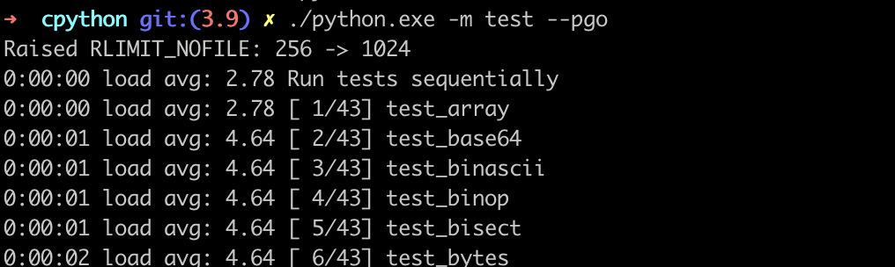

3. 컴파일하기#
지난 챕터까지는 CPython 개발 환경을 구성했다면,
이번 챕터에서는 CPython 소스 코드를 실제로 작동시키는 interpreter로 컴파일하고자 합니다 🚀
macOS#
# C 컴파일러 툴킷(Xcode Command Line Tools) 설치
xcode-select --install ## make, GNU Compiler Collection(gcc) 등 설치
# 외부 라이브러리 설치
brew install openssl xz zlib gdbm sqlite
# Makefile 생성 (configure 스크립트 실행)
CPPFLAGS="-I$(brew --prefix zlib)/include" \
LDFLAGS="-L$(brew --prefix zlib)/lib" \
./configure --with-openssl=$(brew --prefix openssl) --with-pydebug
## 애플칩(M1, M2, ...)은 아래와 같이 xz 경로도 추가해주기
CPPFLAGS="-I$(brew --prefix zlib)/include -I$(brew --prefix xz)/include" \
LDFLAGS="-L$(brew --prefix zlib)/lib -L$(brew --prefix xz)/lib" \
./configure --with-openssl=$(brew --prefix openssl) --with-pydebug
# CPython 바이러니 빌드
make -j2 -s # -j2: 동시 작업 2개 / -s: 실행된 명령어 출력 X
# 바이너리 파일 실행
./python.exe
make란?
소프트웨어 빌드 자동화 도구로, C/C++ 프로젝트 빌드 자동화에서 사용합니다.
Makefile을 기반으로 실행되며,
make [옵션] [target]을 통해 해당하는 명령어(command)가 실행됩니다.# Makefile 형식 목표(target): 의존성(dependencies) 명령어(commands) # 예시 (make docclean / make pythoninfo) docclean: -rm -rf Doc/build -rm -rf Doc/tools/sphinx Doc/tools/pygments Doc/tools/docutils pythoninfo: build_all $(RUNSHARED) ./$(BUILDPYTHON) -m test.pythoninfo
make 옵션
-d(--debug): 디버깅 정보 출력-e(—environment-overrides): Makefile보다 우선할 환경 변수 지정-i(—-ignore-errors): 에러 무시하기-j [N](—-jobs): N개 작업 동시 실행-k(—-keep-going): 특정 타깃 실패하더라도 계속 진행-l [N](--load-average,--max-load): 평균 부하가 N 미만일 때 동시 작업 시작-n(-dry-run): 명령 실행하지 않고 출력하기-s(--silent): 실행 명령어 출력 X-S(--stop): 타깃 실패하면 중지하기
make를 사용하는 이유
C/C++ 같은 컴파일 언어 사용 시, 애플리케이션을 소스에서 컴파일 할 때 시스템의 외부 라이브러리 링크해야 하는데, 코드를 올바르게 로드하고 링크 및 컴파일하기 위해 많은 명령어를 실행해야 할 수도 있습니다.
CPython에서처럼
./configure실행 시 autoconf를 통해 필요한 라이브러리 위치 찾아서 Makefile에 붙여 넣어주고, make 실행을 통해 위와 같은 문제를 쉽게 실행할 수 있도록 해결해줍니다.
CPython make 타깃
빌드 타깃
all(기본): 컴파일러, 라이브러리, 모듈 빌드
clinic: 모든 소스 파일에 대해 인자 클리닉 실행
profile-opt: 프로파일 기반 최적화를 통해 파이썬 바이너리 빌드
regen-all: 생성된 파일을 전부 다시 생성
sharedmods: 공유 모듈 빌드
테스트 타깃
coverage: 컴파일 후 gcov로 테스트 실행
coverage-lcov: html 커버리지 보고 생성
quicktest: 빠른 회귀 테스트만 실행 (오래 걸리는 테스트 제외)
test: 기본적인 회귀 테스트 실행
testall: .pyc 파일 없는/있는 상태로 한 번씩 전체 테스트 스위트 실행
testuniversal: macOS 유니버셜 빌드에서 여러 아키텍처에 대한 테스트 스위트 실행
정리 타깃
check-clean-src: 빌드 시 소스 검사
clean: .pyc 파일과 컴파일된 라이브러리, 프로파일 삭제
cleantest: 직전에 실패한 테스트의 test_python_* 경로 삭제
clobber: 라이브러리, 태그, 구성, 빌드 삭제
distclean: Makefile을 비롯한 소스에서 생성된 모든 파일 삭제
docclean: Doc/ 경로에 생성된 문서 삭제
profile-removal: 모든 최적화 프로파일 삭제
pycremoval: .pyc 파일 삭제
설치 타깃
altbininstall: 버전 명시한 python 인터프리터 설치 (ex: python3.9)
altinstall: 공유 라이브러리, 바이너리, 문서를 버전 접미사와 함께 설치
altmaninstall: 버전 붙은 매뉴얼 설치
bininstall: python, idle, 2to3 등 모든 바이너리 설치
commoninstall: 공유 라이브러리 및 모듈 설치
libinstall: 공유 라이브러리 설치
maninstall: 문서 설치
install: 공유 라이브러리, 바이너리, 문서 설치 (commoninstall + bininstall + maninstall 실행)
sharedinstall: 동적으로 모듈 로드
기타 타깃
autoconf: configure / pyconfig.h.in 다시 생성
python-config: python-config 스크립트 생성
recheck: 이전과 같은 옵션으로 configure 다시 실행
smelly: 내보내진 심벌이 Py 또는 _Py로 시작하는지 확인
tags: vi용 태그 파일 생성
TAGS: 이맥스용 태그 파일 생성
Windows#
여기에서는 “명령 프롬프트 사용하기” 방식만 다룰 예정이며,
”Visual Studio에서 PCbuild/pcbuild.sln 열어서 빌드하기” 방식도 있습니다.
(CPython 파헤치기 도서 32페이지 참고)
# 의존성 설치 (외부 도구, 라이브러리, C 헤더 등 설치)
PCbuild/get_externals.bat
# PCbuild/amd64/python_d.exe 바이너리 파일 생성
build.bat -p x64 -c Debug # 디버그 버전
# 디버그 버전 바이너리 파일 실행
amd64\python_d.exe
# PCbuild/amd64/python.exe 바이너리 파일 생성
build.bat -p x64 -c Release # 릴리즈 버전 (프로파일 기반 최적화 구성 사용됨)
# 릴리즈 버전 바이너리 파일 실행
amd64\python.exe
프로파일 기반 최적화#
프로파일 기반 최적화(PGO: Profile-Guided Optimization)는 컴파일러에서 제공하는 기능으로, 최초 컴파일 후 → 일련의 테스트 실행 → 애플리케이션을 프로파일링하는 최적화 방식입니다.
python -m test --pgo로 실행합니다. (Lib/test/libregrtest/pgo.py 회귀 테스트 실행) 출력 내용
Raised RLIMIT_NOFILE: 256 -> 1024 0:00:00 load avg: 2.78 Run tests sequentially 0:00:00 load avg: 2.78 [ 1/43] test_array 0:00:01 load avg: 4.64 [ 2/43] test_base64 0:00:01 load avg: 4.64 [ 3/43] test_binascii 0:00:01 load avg: 4.64 [ 4/43] test_binop 0:00:01 load avg: 4.64 [ 5/43] test_bisect 0:00:02 load avg: 4.64 [ 6/43] test_bytes 0:00:05 load avg: 4.42 [ 7/43] test_bz2 0:00:06 load avg: 4.42 [ 8/43] test_cmath 0:00:06 load avg: 4.42 [ 9/43] test_codecs 0:00:09 load avg: 4.42 [10/43] test_collections /Users/user/Documents/cpython/Lib/test/test_collections.py:1509: DeprecationWarning: Please use assertEqual instead. self.assertEquals(len(s), len(items) - 1) 0:00:10 load avg: 4.63 [11/43] test_complex 0:00:11 load avg: 4.63 [12/43] test_dataclasses 0:00:11 load avg: 4.63 [13/43] test_datetime 0:00:18 load avg: 4.66 [14/43] test_decimal ------------------------------------------------ NOTICE ------------------------------------------------ test_decimal may generate "malloc can't allocate region" warnings on macOS systems. This behavior is known. Do not report a bug unless tests are also failing. See bpo-40928. -------------------------------------------------------------------------------------------------------- 0:00:26 load avg: 5.08 [15/43] test_difflib 0:00:28 load avg: 5.08 [16/43] test_embed 0:00:36 load avg: 5.62 [17/43] test_float 0:00:36 load avg: 5.62 [18/43] test_fstring 0:00:37 load avg: 5.62 [19/43] test_functools 0:00:37 load avg: 5.62 [20/43] test_generators 0:00:38 load avg: 5.62 [21/43] test_hashlib 0:00:39 load avg: 5.62 [22/43] test_heapq 0:00:40 load avg: 5.33 [23/43] test_int 0:00:41 load avg: 5.33 [24/43] test_itertools 0:00:49 load avg: 5.30 [25/43] test_json 0:00:54 load avg: 5.04 [26/43] test_long 0:01:00 load avg: 4.64 [27/43] test_lzma 0:01:00 load avg: 4.64 [28/43] test_math -- test_lzma skipped 0:01:05 load avg: 4.75 [29/43] test_memoryview 0:01:06 load avg: 4.75 [30/43] test_operator 0:01:06 load avg: 4.75 [31/43] test_ordered_dict 0:01:07 load avg: 4.75 [32/43] test_pickle 0:01:18 load avg: 5.11 [33/43] test_pprint 0:01:19 load avg: 5.11 [34/43] test_re 0:01:21 load avg: 5.10 [35/43] test_set 0:01:30 load avg: 4.63 [36/43] test_sqlite 0:01:31 load avg: 4.63 [37/43] test_statistics 0:01:34 load avg: 4.63 [38/43] test_struct 0:01:35 load avg: 4.58 [39/43] test_tabnanny 0:01:36 load avg: 4.58 [40/43] test_time 0:01:38 load avg: 4.58 [41/43] test_unicode 0:01:40 load avg: 4.37 [42/43] test_xml_etree 0:01:41 load avg: 4.37 [43/43] test_xml_etree_c Total duration: 1 min 43 sec Tests result: SUCCESS
최적화 된 파이썬 배포
macOS:
./configure --enable-optimizationWindows:
build.bat --pgo
최적화에 포함되는 기능
함수 inline 처리 : 다른 함수에서 자주 호출될 경우, 스택 크기 줄이기 위해 inline으로 변경되거나 호출자 함수에 복사됩니다.
가상 호출 추론 : 특정 함수에 대한 가상 함수 호출이 빈번하게 일어나면, 조건부로 실행되는 직접 호출을 대상 함수에 추가합니다.
레지스터 할당 최적화 : 프로파일 데이터를 기반으로 최적화를 하면 레지스터 할당이 향상됩니다.
기본 블록 최적화 : 지정된 프레임 내 일시적으로 자주 실행되는 기본 블록을 동일한 페이지 집합에 배치 → 사용되는 페이지 수 최소화 → 메모리 오버헤드도 최소화 시킵니다.
핫스팟 최적화 : 가장 많이 실행되는 함수의 실행 시간을 최적화시킵니다.
함수 레이아웃 최적화 : 호출 그래프에 따라 동일한 실행 경로를 따르는 함수를 컴파일된 애플리케이션의 동일한 섹션에 배치합니다.
조건부 분기 최적화 : 같은 분기에서 가장 자주 사용되는 분기를 찾아 바로 실행될 수 있도록 해당 분기를 먼저 배치합니다.
미사용 코드 분리 : 호출되지 않은 코드를 애플리케이션의 별도 섹션으로 옮깁니다.